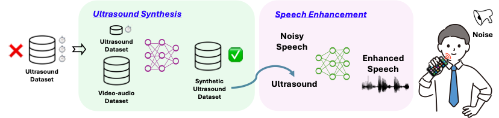

Speech enhancement is pivotal in human-computer interaction (HCI), especially in ubiquitous devices.
Ultrasound-based speech enhancement has emerged as an attractive choice without the need for extra hardware.
Existing solutions, however, rely on labor-intensive and time-consuming data collection under various settings, limiting the full potential of ultrasound-based speech enhancement.
To address the challenge, we propose USPEECH, a cross-modal ultrasound synthesis system for speech enhancement with minimal human effort.
The ultrasound synthesis framework is a two-stage framework to establish a correspondence between visual and ultrasonic modalities by leveraging audio as the bridge, overcoming challenges caused by the lack of paired video-ultrasound datasets and the inherent heterogeneity between light and sound.
Our framework incorporates contrastive audio-video pre-training to project multiple modalities into a shared semantic space and employs an audio-ultrasound encoder-decoder for ultrasound synthesis.
Based on this, we present a speech enhancement network to enhance the speech in Time-Frequency domain and further recover the clean speech waveform via the neural vocoder.
Comprehensive experiments show that USPEECH demonstrates remarkable performance using synthetic ultrasound data, comparable to that using physical data, while significantly outperforming state-of-the-art baselines.

In this section, we demonstrate the recovery results of USPEECH and other baselines (7 volunteers).